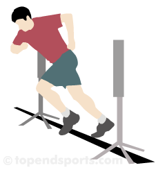

Blog adidas Runtastic: running, fitness et nutrition
2021.06.16 15:35

Cardio Strength Nutrition Daily Habits Success Stories News Cardio Strength Nutrition Daily Habits Success Stories News Fréquence cardiaque maximale, au repos et cible : calculs simples Les conseils d’un expert pour éviter les ampoules en running Comment recycler vos vieilles chaussures de running ? Comprendre les phases du cycle menstruel pour mieux s’entraîner 4 exercices de renforcement musculaire indispensables en running Fessier musclé : moins de blessures, plus de performances Bénéfices d’une alimentation riche en fibres pour les athlètes La bonne alimentation en course à pied : conseils d’expert Le magnésium : un allié de taille pour vos performances sportives 8 conseils pour accélérer la récupération musculaire Fini le jogging, place au plogging ! 7 conseils pour réduire ses déchets plastiques Sport et COVID-19 : comment reprendre le sport après une infection Fitness et motivation > > comment j’ai retrouvé la passion du sport ! De l’obésité au marathon : comment la course à pied a changé la vie de Christian Workout Creator : créez vos entraînements pour la maison Comment ces membres de l’équipe Runtastic ont changé de vie en 2017 Garmin Connect maintenant disponible pour l’appli Runtastic
Des conseils de running, musculation, nutrition et santé : tout pour une vie saine et active !
10 variations de pompes pour pimenter votre entraînement
par Lunden Souza | 29.04.2021
Les pompes sont un exercice qui devrait toujours faire partie de votre programme d’entraînement ! Elles sont idéales pour muscler l’ensemble du
Continuer la lecture
Bénéfices d’une alimentation riche en fibres pour les athlètes
par Julia Denner | 16.06.2021
Les fibres font partie intégrante d’une alimentation équilibrée et doivent être incluses quotidiennement à votre menu. Les sportifs⸱ves bénéficient particulièrement des bienfaits
Continuer la lecture
Comprendre les phases du cycle menstruel pour mieux s’entraîner
par Emily Lemon | 15.06.2021
Pourquoi êtes-vous complètement passionnée par votre entraînement HIIT certains jours de la semaine alors que vous ne voulez pas sortir du lit
Continuer la lecture
Fréquence cardiaque maximale, au repos et cible : calculs simples
par Lunden Souza | 10.06.2021
Fréquence cardiaque maximale, fréquence cardiaque cible, pouls au repos : vous avez déjà certainement entendu ces termes …
Continuer la lecture
Les conseils d’un expert pour éviter les ampoules en running
par Sascha Wingenfeld | 09.06.2021
Les ampoules aux pieds sont les pires ennemies des runners. C’est un des désagréments les plus fréquents qui survient pendant une course
Continuer la lecture
Comment recycler vos vieilles chaussures de running ?
par adidas Runtastic Team | 08.06.2021
La durée de vie moyenne d’une paire de running est d’environ 500 kilomètres. Après cela, l’amorti est trop usé pour courir et
Continuer la lecture
4 exercices de renforcement musculaire indispensables en running
par adidas Runtastic Team | 02.06.2021
Courir plus vite et plus longtemps peut paraître la méthode la plus sûre pour améliorer ses performances de course. Mais n’oublions pas
Continuer la lecture
Le genou du sauteur : comment soulager les douleurs ?
par Dr. Matthias Kirchmayr | 02.06.2021
Votre genou vous fait-il mal après un run ou bien après votre entraînement au poids du corps ? Si c’est le cas,
Continuer la lecture
Comment reconnaître les symptômes du surentraînement ?
par adidas Runners Team | 01.06.2021
Si le corps subit trop de situations stressantes pendant une longue période de temps le risque de blessures augmente
Continuer la lecture
8 conseils pour accélérer la récupération musculaire
par Sascha Wingenfeld | 27.05.2021
La récupération est la clé de la réussite de nos performances. Il s’agit de la phase au cours de laquelle notre corps
Continuer la lecture
La bonne alimentation en course à pied : conseils d’expert
par Julia Denner | 26.05.2021
Que vous soyez débutant, runner occasionnel ou marathonien, fournir le bon carburant à votre corps est essentiel si vous voulez réaliser vos
Continuer la lecture
Fessier musclé : moins de blessures, plus de performances
par Lunden Souza | 25.05.2021
“ Ce qui ne sert pas, se perd ”. Vous connaissez certainement ce vieil adage et vous en avez sûrement déjà fait
Continuer la lecture
Connaissez-vous les 5 erreurs à éviter en running ?
par Herwig Natmessnig | 20.05.2021
Courir, tout le monde sait le faire. Mais lorsqu’il s’agit d’atteindre de meilleurs résultats et de réaliser le meilleur temps lors d’une
Continuer la lecture
Fini le jogging, place au plogging !
par Maïlys Dussert | 19.05.2021
Le plogging est une nouvelle tendance de fitness qui a fait son apparition en Suède et qui est en train de conquérir
Continuer la lecture
Run For The Oceans : luttons contre la pollution plastique
par adidas Runtastic Team | 19.05.2021
Depuis des décennies, l’utilisation du plastique fait partie intégrante de notre vie courante : emballage des aliments, fabrication textile, sacs au supermarché
Continuer la lecture
7 conseils pour réduire ses déchets plastiques
par Tina Ornezeder | 18.05.2021
Saviez-vous que la durée d’utilisation de la plupart des sacs en plastique est de 12 minutes avant d’être jetés ? De plus,
Continuer la lecture
Streak running : courir tous les jours, quels avantages ?
par Abe Ankers | 18.05.2021
Avez-vous déjà essayé d’atteindre un poids cible ou de vous entraîner pour un événement qui n’aura lieu que dans plusieurs mois ?
Continuer la lecture
8 conseils pour bien débuter en running
par Sascha Wingenfeld | 12.05.2021
Vous avez décidé de vous remettre en forme ? Un programme de course à pied bien structuré est idéal pour permettre à
Continuer la lecture
adidas Running : les montres connectées et les applis compatibles
par adidas Runtastic Team | 07.05.2021
Saviez-vous qu’il est possible d’utiliser les applis adidas Running et adidas Training
Continuer la lecture
3 conseils d’expert pour améliorer votre posture en course à pied
par Sascha Wingenfeld | 06.05.2021
Vous courez régulièrement depuis un certain temps mais cela vous semble toujours aussi difficile et peu plaisant ? Cela vous semble-t-il familier
Continuer la lecture EN AFFICHER PLUS
TAGS
Fitness Perdre du poids Équipement et mode Conseils de nutrition Motivation et inspiration Infographie Course à pied Style de vie Nouveautés Recettes Sommeil Entraînement adidas Running Récupération adidas Training Plans d'entraînement Cyclisme musculation workout
INSTAGRAM
Rejoignez-nous sur Instagram
RETROUVEZ-NOUS ICI
Suivez-nous
Facebook Instagram YouTube LinkedIn
À propos de nous
Carrière Tech Blog Partner Presse et médias Assistance